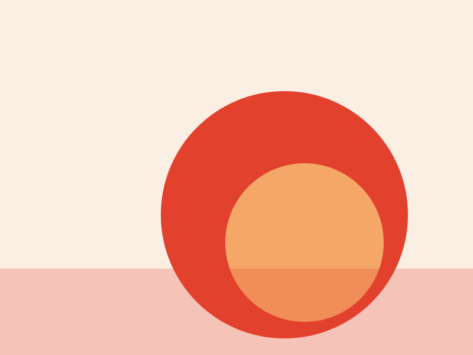

TecnologíaAsí funcionan los chips que imitan al cerebro humano
Consumen mil veces menos energía que un procesador tradicional y ya se prueban en coches, drones y audífonos. Te explicamos cómo aprenden sin necesidad de conectarse a la nube.
Leer más